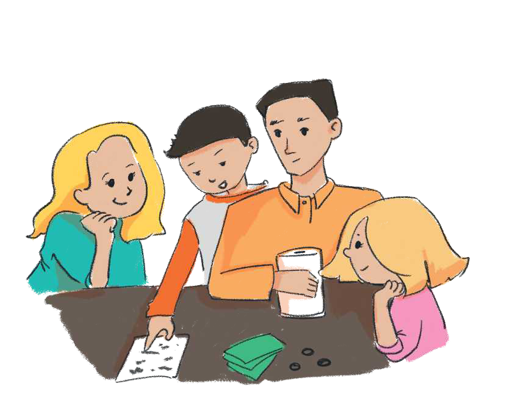

TEMATIKA 3: PLANIFIKIMI
1.FAMILJA E DITËS PLANIFIKON NJË UDHËTIM

Një ditë familja e Ditës po planifikonte të bënte një udhëtim treditor në Brezovicë. Atje kishte dëborë dhe mund të bënin ski. Të gjithë ishin dakord dhe të gëzuar për këtë udhëtim. Mirëpo duhet ta planifikonin dhe ta organizonin të gjithë bashkë këtë udhëtim.
Babai i Ditës tha se do të rezervonin një dhomë hoteli për tri ditë. Përveç kësaj, duhet të planifikonin edhe shpenzimet që do të bënin rrugës dhe gjërat që do të blinin. Kështu, të gjithë bashkë nisën të bëjnë një planifikim të shpenzimeve që do të bënin për këtë udhëtim.